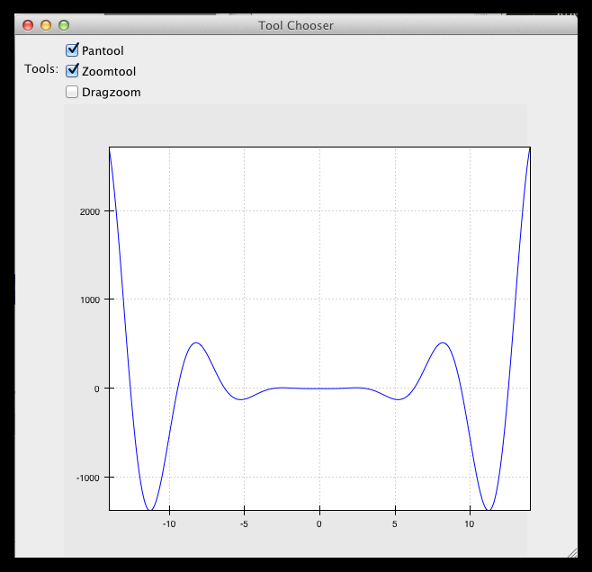

Interactive plotting with Chaco¶
Overview¶
This tutorial is an introduction to Chaco. We’re going to build several mini-applications of increasing capability and complexity. Chaco was designed to be used primarily by scientific programmers, and this tutorial requires only basic familiarity with Python.
Knowledge of NumPy can be helpful for certain parts of the tutorial. Knowledge of GUI programming concepts such as widgets, windows, and events are helpful for the last portion of the tutorial, but it is not required.
This tutorial demonstrates using Chaco with Traits UI, so knowledge of the Traits framework is also helpful. We don’t use very many sophisticated aspects of Traits or Traits UI, and it is entirely possible to pick it up as you go through the tutorial. This tutorial applies to Enthought Tool Suite version 3.x.
It’s also worth pointing out that you don’t have to use Traits UI in order to use Chaco — you can integrate Chaco directly with Qt or wxPython — but for this tutorial, we use Traits UI to make things easier.
Goals¶
By the end of this tutorial, you will have learned how to:
- create plots of various types
- arrange plots in various layouts
- configure and dynamically modify your plots using Traits UI
- interact with plots using tools
- create custom, stateful tools that interact with mouse and keyboard
Introduction¶
Chaco is a plotting application toolkit. This means that it can build both static plots and dynamic data visualizations that let you interactively explore your data. Here are four basic examples of Chaco plots:
This plot shows a static “tornado plot” with a categorical Y axis and continuous X axis. The plot is resizable, but the user cannot interact or explore the data in any way.

This is an overlaid composition of line and scatter plots with a legend. Unlike the previous plot, the user can pan and zoom this plot, exploring the relationship between data curves in areas that appear densely overlapping. Furthermore, the user can move the legend to an arbitrary position on the plot, and as they resize the plot, the legend maintains the same screen-space separation relative to its closest corner.

This example starts to demonstrate interacting with the data set in an exploratory way. Whereas interactivity in the previous example was limited to basic pan and zoom (which are fairly common in most plotting libraries), this is an example of a more advanced interaction that allows a level of data exploration beyond the standard view manipulations.
With this example, the user can select a region of data space, and a simple line fit is applied to the selected points. The equation of the line is then displayed in a text label.
The lasso selection tool and regression overlay are both built in to Chaco, but they serve an additional purpose of demonstrating how one can build complex data-centric interactions and displays on top of the Chaco framework.

This is a much more complex demonstration of Chaco’s capabilities. The user can view the cross sections of a 2-D scalar-valued function. The cross sections update in real time as the user moves the mouse, and the “bubble” on each line plot represents the location of the cursor along that dimension. By using drop-down menus (not show here), the user can change plot attributes like the colormap and the number of contour levels used in the center plot, as well as the actual function being plotted.
Script-oriented plotting¶
We distinguish between “static” plots and “interactive visualizations” because these different applications of a library affect the structure of how the library is written, as well as the code you write to use the library.
Here is a simple example of the “script-oriented” approach for creating a static plot. This is probably familiar to anyone who has used Gnuplot, MATLAB, or Matplotlib:
1 2 3 4 5 6 7 8 9 10 | import numpy as np
from chaco.shell import *
x = np.linspace(-2*pi, 2*pi, 100)
y = np.sin(x)
plot(x, y, "r-")
title("First plot")
ytitle("sin(x)")
show()
|
This creates this plot:
The basic structure of this example is that we generate some data, then we call functions to plot the data and configure the plot. There is a global concept of “the active plot”, and the functions do high-level manipulations on it. The generated plot is then usually saved to disk for inclusion in a journal article or presentation slides.
Now, as it so happens, this particular example uses the chaco.shell script plotting package, so when you run this script, the plot that Chaco opens does have some basic interactivity. You can pan and zoom, and even move forwards and backwards through your zoom history. But ultimately it’s a pretty static view into the data.
Application-oriented plotting¶
The second approach to plotting can be thought of as “application-oriented”, for lack of a better term. There is definitely a bit more code, and the plot initially doesn’t look much different, but it sets us up to do more interesting things, as you will see later on:
1 2 3 4 5 6 7 8 9 10 11 12 13 14 15 16 17 18 19 20 21 22 23 24 25 26 27 28 | from traits.api import HasTraits, Instance
from traitsui.api import View, Item
from chaco.api import Plot, ArrayPlotData
from enable.component_editor import ComponentEditor
from numpy import linspace, sin
class LinePlot(HasTraits):
plot = Instance(Plot)
traits_view = View(
Item('plot',editor=ComponentEditor(), show_label=False),
width=500, height=500, resizable=True, title="Chaco Plot")
def __init__(self):
super(LinePlot, self).__init__()
x = linspace(-14, 14, 100)
y = sin(x) * x**3
plotdata = ArrayPlotData(x=x, y=y)
plot = Plot(plotdata)
plot.plot(("x", "y"), type="line", color="blue")
plot.title = "sin(x) * x^3"
self.plot = plot
if __name__ == "__main__":
LinePlot().configure_traits()
|
This produces a plot similar to the previous script-oriented code snippet:
So, this is our first “real” Chaco plot. We will walk through this code and look at what each bit does. This example serves as the basis for many of the later examples.
Application-oriented plotting, step by step¶
Let’s start with the basics. First, we declare a class to represent our plot, called LinePlot:
class LinePlot(HasTraits):
plot = Instance(Plot)
This class uses the Enthought Traits package, and all of our objects subclass from HasTraits.
Next, we declare a Traits UI View for this class:
traits_view = View(
Item('plot',editor=ComponentEditor(), show_label=False),
width=500, height=500, resizable=True, title="Chaco Plot")
Inside this view, we are placing a reference to the plot trait and telling Traits UI to use the ComponentEditor (imported from enable.component_editor) to display it. If the trait were an Int or Str or Float, Traits could automatically pick an appropriate GUI element to display it. Since Traits UI doesn’t natively know how to display Chaco components, we explicitly tell it what kind of editor to use.
The other parameters in the View constructor are pretty self-explanatory, and the Traits UI User’s Guide documents all the various properties you can set here. For our purposes, this Traits View is sort of boilerplate. It gets us a nice little window that we can resize. We’ll be using something like this View in most of the examples in the rest of the tutorial.
Now, let’s look at the constructor, where the real work gets done:
def __init__(self):
super(LinePlot, self).__init__()
x = linspace(-14, 14, 100)
y = sin(x) * x**3
plotdata = ArrayPlotData(x=x, y=y)
The first thing we do here is call the super-class’s __init__() method, which ensures that all the Traits machinery is properly set up, even though the __init__() method is overridden. Then we create some mock data, just like in the script-oriented approach. But rather than directly calling some sort of plotting function to throw up a plot, we create this ArrayPlotData object and stick the data in there. The ArrayPlotData object is a simple structure that associates a name with a NumPy array.
In a script-oriented approach to plotting, whenever you have to update the data or tweak any part of the plot, you basically re-run the entire script. Chaco’s model is based on having objects representing each of the little pieces of a plot, and they all use Traits events to notify one another that some attribute has changed. So, the ArrayPlotData is an object that interfaces your data with the rest of the objects in the plot. In a later example we’ll see how we can use the ArrayPlotData to quickly swap data items in and out, without affecting the rest of the plot.
The next line creates an actual Plot object, and gives it the ArrayPlotData instance we created previously:
plot = Plot(plotdata)
Chaco’s Plot object serves two roles: it is both a container of renderers, which are the objects that do the actual task of transforming data into lines and markers and colors on the screen, and it is a factory for instantiating renderers. Once you get more familiar with Chaco, you can choose to not use the Plot object, and instead directly create renderers and containers manually. Nonetheless, the Plot object does a lot of nice housekeeping that is useful in a large majority of use cases.
Next, we call the plot() method on the Plot object we just created:
plot.plot(("x", "y"), type="line", color="blue")
This creates a blue line plot of the data items named “x” and “y”. Note that we are not passing in an actual array here; we are passing in the names of arrays in the ArrayPlotData we created previously.
This method call creates a new renderer — in this case a line renderer — and adds it to the Plot.
This may seem kind of redundant or roundabout to folks who are used to passing in a pile of NumPy arrays to a plot function, but consider this: ArrayPlotData objects can be shared between multiple Plots. If you want several different plots of the same data, you don’t have to externally keep track of which plots are holding on to identical copies of what data, and then remember to shove in new data into every single one of those plots. The ArrayPlotData object acts almost like a symlink between consumers of data and the actual data itself.
Next, we set a title on the plot:
plot.title = "sin(x) * x^3"
And then we set our plot trait to the new plot:
self.plot = plot
The last thing we do in this script is set up some code to run when the script is executed:
if __name__ == "__main__":
LinePlot().configure_traits()
This one-liner instantiates a LinePlot object and calls its configure_traits() method. This brings up a dialog with a traits editor for the object, built up according to the View we created earlier. In our case, the editor just displays our plot attribute using the ComponentEditor.
Scatter plots¶
We can use the same pattern to build a scatter plot:
1 2 3 4 5 6 7 8 9 10 11 12 13 14 15 16 17 18 19 20 21 22 23 24 25 26 27 28 | from traits.api import HasTraits, Instance
from traitsui.api import View, Item
from chaco.api import Plot, ArrayPlotData
from enable.component_editor import ComponentEditor
from numpy import linspace, sin
class ScatterPlot(HasTraits):
plot = Instance(Plot)
traits_view = View(
Item('plot',editor=ComponentEditor(), show_label=False),
width=500, height=500, resizable=True, title="Chaco Plot")
def __init__(self):
super(ScatterPlot, self).__init__()
x = linspace(-14, 14, 100)
y = sin(x) * x**3
plotdata = ArrayPlotData(x = x, y = y)
plot = Plot(plotdata)
plot.plot(("x", "y"), type="scatter", color="blue")
plot.title = "sin(x) * x^3"
self.plot = plot
if __name__ == "__main__":
ScatterPlot().configure_traits()
|
Note that we have only changed the type argument to the plot.plot() call and the name of the class from LinePlot to ScatterPlot. This produces the following:

Image plots¶
Image plots can be created in a similar fashion:
1 2 3 4 5 6 7 8 9 10 11 12 13 14 15 16 17 18 19 20 21 22 23 24 25 26 27 28 29 | from traits.api import HasTraits, Instance
from traitsui.api import View, Item
from chaco.api import Plot, ArrayPlotData, jet
from enable.component_editor import ComponentEditor
from numpy import exp, linspace, meshgrid
class ImagePlot(HasTraits):
plot = Instance(Plot)
traits_view = View(
Item('plot', editor=ComponentEditor(), show_label=False),
width=500, height=500, resizable=True, title="Chaco Plot")
def __init__(self):
super(ImagePlot, self).__init__()
x = linspace(0, 10, 50)
y = linspace(0, 5, 50)
xgrid, ygrid = meshgrid(x, y)
z = exp(-(xgrid*xgrid+ygrid*ygrid)/100)
plotdata = ArrayPlotData(imagedata = z)
plot = Plot(plotdata)
plot.img_plot("imagedata", colormap=jet)
self.plot = plot
if __name__ == "__main__":
ImagePlot().configure_traits()
|
There are a few more steps to create the input Z data, and we also call a different method on the Plot object — img_plot() instead of plot(). The details of the method parameters are not that important right now; this is just to demonstrate how we can apply the same basic pattern from the “first plot” example above to do other kinds of plots.

Multiple plots¶
Earlier we said that the Plot object is both a container of renderers and a factory (or generator) of renderers. This modification of the previous example illustrates this point. We only create a single instance of Plot, but we call its plot() method twice. Each call creates a new renderer and adds it to the Plot object’s list of renderers. Also notice that we are reusing the x array from the ArrayPlotData:
1 2 3 4 5 6 7 8 9 10 11 12 13 14 15 16 17 18 19 20 21 22 23 24 25 26 27 28 29 30 | from traits.api import HasTraits, Instance
from traitsui.api import View, Item
from chaco.api import Plot, ArrayPlotData
from enable.component_editor import ComponentEditor
from numpy import cos, linspace, sin
class OverlappingPlot(HasTraits):
plot = Instance(Plot)
traits_view = View(
Item('plot',editor=ComponentEditor(), show_label=False),
width=500, height=500, resizable=True, title="Chaco Plot")
def __init__(self):
super(OverlappingPlot, self).__init__()
x = linspace(-14, 14, 100)
y = x/2 * sin(x)
y2 = cos(x)
plotdata = ArrayPlotData(x=x, y=y, y2=y2)
plot = Plot(plotdata)
plot.plot(("x", "y"), type="scatter", color="blue")
plot.plot(("x", "y2"), type="line", color="red")
self.plot = plot
if __name__ == "__main__":
OverlappingPlot().configure_traits()
|
This code generates the following plot:
Containers¶
So far we’ve only seen single plots, but frequently we need to plot data side by side. Chaco uses various subclasses of Container to do layout. Horizontal containers (HPlotContainer) place components horizontally:

Vertical containers (VPlotContainer) array component vertically:
Grid container (GridPlotContainer) lays plots out in a grid:
Overlay containers (OverlayPlotContainer) just overlay plots on top of each other:
You’ve actually already seen OverlayPlotContainer — the Plot class is actually a special subclass of OverlayPlotContainer. All of the plots inside this container appear to share the same X- and Y-axis, but this is not a requirement of the container. For instance, the following plot shows plots sharing only the X-axis:

Using a container¶
Containers can have any Chaco component added to them. The following code creates a separate Plot instance for the scatter plot and the line plot, and adds them both to the HPlotContainer object:
1 2 3 4 5 6 7 8 9 10 11 12 13 14 15 16 17 18 19 20 21 22 23 24 25 26 27 28 29 30 31 | from traits.api import HasTraits, Instance
from traitsui.api import View, Item
from chaco.api import HPlotContainer, ArrayPlotData, Plot
from enable.component_editor import ComponentEditor
from numpy import linspace, sin
class ContainerExample(HasTraits):
plot = Instance(HPlotContainer)
traits_view = View(Item('plot', editor=ComponentEditor(), show_label=False),
width=1000, height=600, resizable=True, title="Chaco Plot")
def __init__(self):
super(ContainerExample, self).__init__()
x = linspace(-14, 14, 100)
y = sin(x) * x**3
plotdata = ArrayPlotData(x=x, y=y)
scatter = Plot(plotdata)
scatter.plot(("x", "y"), type="scatter", color="blue")
line = Plot(plotdata)
line.plot(("x", "y"), type="line", color="blue")
container = HPlotContainer(scatter, line)
self.plot = container
if __name__ == "__main__":
ContainerExample().configure_traits()
|
This produces the following plot:
There are many parameters you can configure on a container, like background color, border thickness, spacing, and padding. We insert some more lines between lines 20 and 21 of the previous example to make the two plots touch in the middle:
container = HPlotContainer(scatter, line)
container.spacing = 0
scatter.padding_right = 0
line.padding_left = 0
line.y_axis.orientation = "right"
self.plot = container
Something to note here is that all Chaco components have both bounds and padding (or margin). In order to make our plots touch, we need to zero out the padding on the appropriate side of each plot. We also move the Y-axis for the line plot (which is on the right hand side) to the right side.
This produces the following:

Dynamically changing plots¶
So far, the stuff you’ve seen is pretty standard: building up a plot of some sort and doing some layout on them. Now we start taking advantage of the underlying framework.
Chaco is written using Traits. This means that all the graphical bits you see — and many of the bits you don’t see — are all objects with various traits, generating events, and capable of responding to events.
We’re going to modify our previous ScatterPlot example to demonstrate some of these capabilities. Here is the full listing of the modified code:
1 2 3 4 5 6 7 8 9 10 11 12 13 14 15 16 17 18 19 20 21 22 23 24 25 26 27 28 29 30 31 32 33 34 35 36 37 38 39 40 41 42 43 44 45 | from traits.api import HasTraits, Instance, Int
from traitsui.api import View, Group, Item
from enable.api import ColorTrait
from enable.component_editor import ComponentEditor
from chaco.api import marker_trait, Plot, ArrayPlotData
from numpy import linspace, sin
class ScatterPlotTraits(HasTraits):
plot = Instance(Plot)
color = ColorTrait("blue")
marker = marker_trait
marker_size = Int(4)
traits_view = View(
Group(Item('color', label="Color", style="custom"),
Item('marker', label="Marker"),
Item('marker_size', label="Size"),
Item('plot', editor=ComponentEditor(), show_label=False),
orientation = "vertical"),
width=800, height=600, resizable=True, title="Chaco Plot")
def __init__(self):
super(ScatterPlotTraits, self).__init__()
x = linspace(-14, 14, 100)
y = sin(x) * x**3
plotdata = ArrayPlotData(x = x, y = y)
plot = Plot(plotdata)
self.renderer = plot.plot(("x", "y"), type="scatter", color="blue")[0]
self.plot = plot
def _color_changed(self):
self.renderer.color = self.color
def _marker_changed(self):
self.renderer.marker = self.marker
def _marker_size_changed(self):
self.renderer.marker_size = self.marker_size
if __name__ == "__main__":
ScatterPlotTraits().configure_traits()
|
Let’s step through the changes.
First, we add traits for color, marker type, and marker size:
class ScatterPlotTraits(HasTraits):
plot = Instance(Plot)
color = ColorTrait("blue")
marker = marker_trait
marker_size = Int(4)
We also change our Traits UI View to include references to these new traits. We put them in a Traits UI Group so that we can control the layout in the dialog a little better — here, we’re setting the layout orientation of the elements in the dialog to “vertical”.
traits_view = View(
Group(
Item('color', label="Color", style="custom"),
Item('marker', label="Marker"),
Item('marker_size', label="Size"),
Item('plot', editor=ComponentEditor(), show_label=False),
orientation = "vertical" ),
width=500, height=500, resizable=True,
title="Chaco Plot")
Now we have to do something with those traits. We modify the constructor so that we grab a handle to the renderer that is created by the call to plot():
self.renderer = plot.plot(("x", "y"), type="scatter", color="blue")[0]
Recall that a Plot is a container for renderers and a factory for them. When called, its plot() method returns a list of the renderers that the call created. In previous examples we’ve been just ignoring or discarding the return value, since we had no use for it. In this case, however, we grab a reference to that renderer so that we can modify its attributes in later methods.
The plot() method returns a list of renderers because for some values of the type argument, it will create multiple renderers. In our case here, we are just doing a scatter plot, and this creates just a single renderer.
Next, we define some Traits event handlers. These are specially-named methods that are called whenever the value of a particular trait changes. Here is the handler for color trait:
def _color_changed(self):
self.renderer.color = self.color
This event handler is called whenever the value of self.color changes, whether due to user interaction with a GUI, or due to code elsewhere. (The Traits framework automatically calls this method because its name follows the name template of _traitname_changed.) Since this method is called after the new value has already been updated, we can read out the new value just by accessing self.color. We just copy the color to the scatter renderer. You can see why we needed to hold on to the renderer in the constructor.
Now we do the same thing for the marker type and marker size traits:
def _marker_changed(self):
self.renderer.marker = self.marker
def _marker_size_changed(self):
self.renderer.marker_size = self.marker_size
Running the code produces an app that looks like this:

Depending on your platform, the color editor/swatch at the top may look different. This is how it looks on Mac OS X. All of the controls here are “live”. If you modify them, the plot updates.
Dynamically changing plot content¶
Traits are not just useful for tweaking visual features. For instance, you can use them to select among several data items. This next example is based on the earlier LinePlot example, and we’ll walk through the modifications:
1 2 3 4 5 6 7 8 9 10 11 12 13 14 15 16 17 18 19 20 21 22 23 24 25 26 27 28 29 30 | from scipy.special import jn
class DataChooser(HasTraits):
plot = Instance(Plot)
data_name = Enum("jn0", "jn1", "jn2")
traits_view = View(
Item('data_name', label="Y data"),
Item('plot', editor=ComponentEditor(), show_label=False),
width=800, height=600, resizable=True,
title="Data Chooser")
def __init__(self):
x = linspace(-5, 10, 100)
# jn is the Bessel function
self.data = {"jn0": jn(0, x),
"jn1": jn(1, x),
"jn2": jn(2, x)}
self.plotdata = ArrayPlotData(x = x, y = self.data["jn0"])
plot = Plot(self.plotdata)
plot.plot(("x", "y"), type="line", color="blue")
self.plot = plot
def _data_name_changed(self):
self.plotdata.set_data("y", self.data[self.data_name])
|
First, we add an Enumeration trait to select a particular data name
data_name = Enum("jn0", "jn1", "jn2")
and a corresponding Item in the Traits UI View
Item('data_name', label="Y data")
By default, an Enum trait will be displayed as a drop-down. In the constructor, we create a dictionary that maps the data names to actual numpy arrays:
# jn is the Bessel function
self.data = {“jn0”: jn(0, x),
“jn1”: jn(1, x),
“jn2”: jn(2, x)}
When we initialize the ArrayPlotData, we’ll set y to the jn0 array.
self.plotdata = ArrayPlotData(x = x, y = self.data[“jn0”])
plot = Plot(self.plotdata)
Note that we are storing a reference to the plotdata object. In previous examples, there was no need to keep a reference around (except for the one stored inside the Plot object).
Finally, we create an event handler for the “data_name” Trait. Any time the data_name trait changes, we’re going to look it up in the self.data dictionary, and push that value into the y data item in ArrayPlotData.
def _data_name_changed(self):
self.plotdata.set_data("y", self.data[self.data_name])
Note that there is no actual copying of data here, we’re just passing around numpy references.
The final plot looks like this:

Connected plots¶
One of the features of Chaco’s architecture is that all the underlying components of a plot are live objects, connected via events. In the next set of examples, we’ll look at how to hook some of those up.
First, we are going to make two separate plots look at the same data space region. This is the full code:
1 2 3 4 5 6 7 8 9 10 11 12 13 14 15 16 17 18 19 20 21 22 23 24 25 26 27 28 29 | class ConnectedRange(HasTraits):
container = Instance(HPlotContainer)
traits_view = View(Item('container', editor=ComponentEditor(),
show_label=False),
width=1000, height=600, resizable=True,
title="Connected Range")
def __init__(self):
x = linspace(-14, 14, 100)
y = sin(x) * x**3
plotdata = ArrayPlotData(x = x, y = y)
scatter = Plot(plotdata)
scatter.plot(("x", "y"), type="scatter", color="blue")
line = Plot(plotdata)
line.plot(("x", "y"), type="line", color="blue")
self.container = HPlotContainer(scatter, line)
scatter.tools.append(PanTool(scatter))
scatter.tools.append(ZoomTool(scatter))
line.tools.append(PanTool(line))
line.tools.append(ZoomTool(line))
scatter.range2d = line.range2d
|
First, we define a “horizontal” container that displays the plots side to side:
container = Instance(HPlotContainer)
traits_view = View(Item('container', editor=ComponentEditor(),
show_label=False),
width=1000, height=600, resizable=True,
title="Connected Range")
In the constructor, we define some data and create two plots of it, a line plot and a scatter plot, insert them in the container, and add pan and zoom tools to both.
The most important part of the code is the last line of the constructor:
scatter.range2d = line.range2d
Chaco has a concept of data range to express bounds in data space. There are a series of objects representing this concept. The standard 2D plots that we have considered so far all have a two-dimensional range on them.
In this line, we are replacing the range on the scatter plot with the range from the line plot. The two plots now share the same range object, and will change together in response to changes to the data space bounds. For example, panning or zooming one of the plots will result in the same transformation in the other:

Plot orientation, index and value¶
We can modify the connected plots example such that the two plots only share one of the axes. The 2D data range trait is actually composed of two 1D data ranges, and we can access them independently. So to link up the x-axes we can substitute the line
scatter.range2d = line.range2d
with
scatter.index_range = line.index_range
Now the plot can move independently on the y-axis and are link on the x-axis.
You may have notices that we referred to the x-axis range as index range. The terms index and value are quite common in Chaco: As it is possible to easily change the orientation of most Chaco plots, we want some way to differentiate between the abscissa and the ordinate axes. If we just stuck with x and y, things would get pretty confusing after a change in orientation, as one would now, for instance, change the y-axis by referring to it as x_range.
Instead, in Chaco we refer to the data domain as index, and to the co-domain (the set of possible values) as value.
To illustrate how flexible this concept is, we can switch the orientation of the line plot by substituting
line = Plot(plotdata)
with
line = Plot(plotdata, orientation="v", default_origin="top left")
The default_origin parameter sets the index axis to be increasing downwards. As a result of these changes, now changes to the scatter plot index axis (the x axis) produces equivalent changes in the line plot index axis (the y axis):

Multiple windows¶
Chaco components can also be connected beyond the boundary of a single window. We will again modify the LinePlot example. This time, we will create a scatter plot and a line plot with connected ranges in different windows.
First of all, we define a Traits UI view of a customizable plot. This is the full code that we will analyze step by step below
1 2 3 4 5 6 7 8 9 10 11 12 13 14 15 16 17 18 19 20 21 22 23 24 25 26 27 28 29 30 31 32 33 34 | class PlotEditor(HasTraits):
plot = Instance(Plot)
plot_type = Enum("scatter", "line")
orientation = Enum("horizontal", "vertical")
traits_view = View(Item('orientation', label="Orientation"),
Item('plot', editor=ComponentEditor(),
show_label=False),
width=500, height=500, resizable=True,
title="Chaco Plot")
def __init__(self, *args, **kw):
super(PlotEditor, self).__init__(*args, **kw)
x = linspace(-14, 14, 100)
y = sin(x) * x**3
plotdata = ArrayPlotData(x = x, y = y)
plot = Plot(plotdata)
plot.plot(("x", "y"), type=self.plot_type, color="blue")
plot.tools.append(PanTool(plot))
plot.tools.append(ZoomTool(plot))
self.plot = plot
def _orientation_changed(self):
if self.orientation == "vertical":
self.plot.orientation = "v"
else:
self.plot.orientation = "h"
|
The plot defines two traits, one for the plot type (scatter of line plot)
plot_type = Enum("scatter", "line")
and one for the orientation of the plot
orientation = Enum("horizontal", "vertical")
The plot_type trait will not be exposed in the UI, but we add a Traits UI item for the orientation:
traits_view = View(Item('orientation', label="Orientation"), ...)
Since the orientation trait is an Enum, this will appear as a drop-down box in the window.
The constructor is very similar to the one used in the previous examples, except that we create a new plot of the type specified in the plot_type trait:
plot.plot(("x", "y"), type=self.plot_type, color="blue")
Finally, we wrote a Trait event handler for the orientation trait, which changes the orientation of the plot as required:
def _orientation_changed(self):
if self.orientation == "vertical":
self.plot.orientation = "v"
else:
self.plot.orientation = "h"
The PlotEditor represents one window. When running the application, we can easily create two separate windows, and connect their axes in this way:
1 2 3 4 5 6 7 8 9 10 11 12 | if __name__ == "__main__":
# create two plots, one of type "scatter", one of type "line"
scatter = PlotEditor(plot_type = "scatter")
line = PlotEditor(plot_type = "line")
# connect the axes of the two plots
scatter.plot.range2d = line.plot.range2d
# open two windows
line.edit_traits()
scatter.configure_traits()
|
In the last two lines, we open Traits UI editors on both objects. Note that we call edit_traits() on the first object, and configure_traits() on the second object. The technical reason for this is that configure_traits() will start the wxPython main loop (thereby blocking the script until the window is closed), whereas edit_traits() will not. Thus, when opening multiple windows, we would call edit_traits() on all but the last one.
Here is a screenshot of the two windows in action:

Plot tools: adding interactions¶
An important feature of Chaco is that it is possible to write re-usable tools to interact directly with the plots.
Chaco takes a modular approach to interactivity. Instead of begin hard-coded into specific plot types or plot renderers, the interaction logic is factored out into classes we call tools. An advantage of this approach is that we can add new plot types and container types and still use the old interactions, as long as we adhere to certain basic interfaces.
Thus far, none of the example plots we’ve built are truly interactive, e.g., you cannot pan or zoom them. In the next example, we will modify the LinePlot example so that we can pan and zoom.
1 2 3 4 5 6 7 8 9 10 11 12 13 14 15 16 17 18 19 20 21 22 23 24 25 | from chaco.tools.api import PanTool, ZoomTool, DragZoom
class ToolsExample(HasTraits):
plot = Instance(Plot)
traits_view = View(
Item('plot',editor=ComponentEditor(), show_label=False),
width=500, height=500,
resizable=True,
title="Chaco Plot")
def __init__(self):
x = linspace(-14, 14, 100)
y = sin(x) * x**3
plotdata = ArrayPlotData(x = x, y = y)
plot = Plot(plotdata)
plot.plot(("x", "y"), type="line", color="blue")
# append tools to pan, zoom, and drag
plot.tools.append(PanTool(plot))
plot.tools.append(ZoomTool(plot))
plot.tools.append(DragZoom(plot, drag_button="right"))
self.plot = plot
|
The example illustrates the general usage pattern: we create a new instance of a Tool, giving it a reference to the Plot, and then we append that tool to a list of tools on the plot. This looks a little redundant, but there is a reason why the tools need a reference back to the plot: the tools use methods and attributes of the plot to transform and interpret the events that it receives, as well as act on those events. Most tools will also modify the attributes on the plot. The pan and zoom tools, for instance, modify the data ranges on the component handed in to it.
Dynamically controlling interactions¶
One of the nice things about having interactivity bundled up into modular tools is that one can dynamically control when the interaction are allowed and when they are not.
We will modify the previous example so that we can externally control what interactions are available on a plot.
First, we add a new trait to hold a list of names of the tools. This is similar to adding a list of data items in the DataChooser example. However, instead of a drop-down (which is the default editor for an Enumeration trait), we tell Traits that we would like a check list by creating a CheckListEditor, so that we will be able to select multiple tools. We give the CheckListEditor a list of possible values, which are just the names of the tools. Notice that these are strings, and not the tool classes themselves.
1 2 3 4 5 6 7 8 | from traitsui.api import CheckListEditor
class ToolsExample(HasTraits):
plot = Instance(Plot)
tools = List(editor=CheckListEditor(values = ["PanTool",
"SimpleZoom", "DragZoom"]))
|
In the constructor, we do not add the interactive tools:
1 2 3 4 5 6 7 | def __init__(self):
x = linspace(-14, 14, 100)
y = sin(x) * x**3
plotdata = ArrayPlotData(x = x, y = y)
plot = Plot(plotdata)
plot.plot(("x", "y"), type="line", color="blue")
self.plot = plot
|
Instead, we write a trait event handler for the tools trait:
1 2 3 4 5 6 7 8 9 10 11 | def _tools_changed(self):
classes = [eval(class_name) for class_name in self.tools]
# Remove all tools from the plot
plot_tools = self.plot.tools
for tool in plot_tools:
plot_tools.remove(tool)
# Create new instances for the selected tool classes
for cls in classes:
self.plot.tools.append(cls(self.plot))
|
The first line,
classes = [eval(class_name) for class_name in self.tools]
converts the value of the tools trait (a string) to a Tool class. In the of the method, we remove all the existing tools from the plot
# Remove all tools from the plot
plot_tools = self.plot.tools
for tool in plot_tools:
plot_tools.remove(tool)
and create new ones for the selected items:
# Create new instances for the selected tool classes
for cls in classes:
self.plot.tools.append(cls(self.plot))
Here is a screenshot of the final result:
Writing a custom tool¶
It is easy to extend and customize the Chaco framework: the main Chaco components define clear interfaces, so one can write a custom plot or tool, plug it in, and it will play well with the existing pieces.
Our next step is to write a simple, custom tool that will print out the position on the plot under the mouse cursor. This can be done in just a few lines:
from enable.api import BaseTool
class CustomTool(BaseTool):
def normal_mouse_move(self, event):
print "Screen point:", event.x, event.y
BaseTool is an abstract class that forms the interface for tools. It defines a set of methods that are called for the most common mouse and keyboard events. In this case, we define a callback for the mouse_move event. The prefix normal indicated the state of the tool, which we will cover next.
All events have an x and a y position, and our custom tools is just going to print it out.

Other event callbacks correspond to mouse gestures (mouse_enter, mouse_leave, mouse_wheel), mouse clicks (left_down, left_up, right_down, right_up), and key presses (key_pressed).
Stateful tools¶
Chaco tools are stateful. You can think of them as state machines that toggle states based on the events they receive. All tools have at least one state, called “normal”. That is why the callback in the previous example began with the prefix normal_.
Our next tool is going to have two states, “normal” and “mousedown”. We are going to enter the “mousedown” state when we detect a “left down” event, and we will exit that state when we detect a “left up” event:
1 2 3 4 5 6 7 8 9 10 11 12 13 14 | class CustomTool(BaseTool):
event_state = Enum("normal", "mousedown")
def normal_mouse_move(self, event):
print "Screen:", event.x, event.y
def normal_left_down(self, event):
self.event_state = "mousedown"
event.handled = True
def mousedown_left_up(self, event):
self.event_state = "normal"
event.handled = True
|
Every event has a handled boolean attribute that can be set to announce that it has been taken care of. Handled events are not propagated further.
So far, the custom tool would stop printing to screen while the left mouse button is pressed. This is because while the tools is in the “mousedown” state, a mouse move event looks for a mousedown_mouse_move callback method. We can write an implementation for it that maps the screen coordinates in data space:
def mousedown_mouse_move(self, event):
print "Data:", self.component.map_data((event.x, event.y))
The self.component attribute contains a reference to the underlying plot. This is why tools need to be given a reference to a plot when they are constructed: almost all tools need to use some capabilities (like map_data) of the components for which they are receiving events.

Final words¶
This concludes this tutorial. For further information, please refer to the Other Chaco resources page, or visit the User guide.
This tutorial is based on the “Interactive plotting with Chaco” tutorial that was presented by Peter Wang at Scipy 2008

Page Contents
- Interactive plotting with Chaco
- Overview
- Goals
- Introduction
- Script-oriented plotting
- Application-oriented plotting
- Application-oriented plotting, step by step
- Scatter plots
- Image plots
- Multiple plots
- Containers
- Using a container
- Dynamically changing plots
- Dynamically changing plot content
- Connected plots
- Plot orientation, index and value
- Multiple windows
- Plot tools: adding interactions
- Dynamically controlling interactions
- Writing a custom tool
- Stateful tools
- Final words